Table of Contents
- 1. introduction
- 1.1. notation
- 1.2. matrix product
- 1.3. elements of the product written out
- 1.4. a single element of the matrix product as an inner product of the corresponding row and column vectors
- 1.5. selecting a column with a standard basis vector
- 1.6. first column
- 1.7. second column
- 1.8. geometric interpretation
- 1.9. columns as basis images
- 1.10. matrix vector product as a linear combination of columns
- 1.11. proof
- 1.12. matrix product as a composition of linear maps
- 1.13. first column of the matrix product
- 1.14. is a linear combination of all columns of one matrix with coefficients defined by the components of the first column of the other matrix
- 1.15. equivalently the comonents of the first column are defined by the inner product of each row of the first matrix with the first column of the second matrix
- 1.16. putting it all together
- 2. setup
- 3. define two random matrices
- 4. nested loops
- 5. remove the third loop with elementwise operations
- 6. remove the second loop with broadcasting
- 7. Einstein summation
- 8. BLAS
- 9. results
1. introduction
1.1. notation
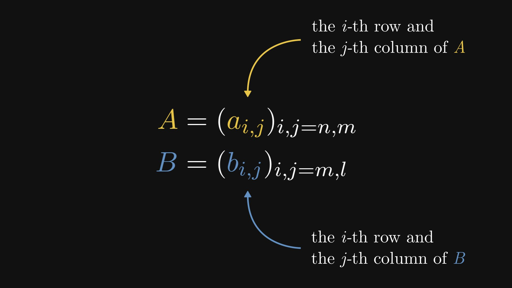
1.2. matrix product
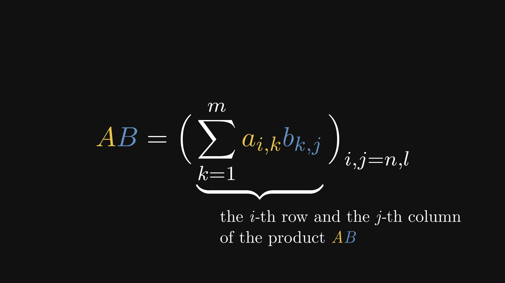
1.3. elements of the product written out

1.4. a single element of the matrix product as an inner product of the corresponding row and column vectors
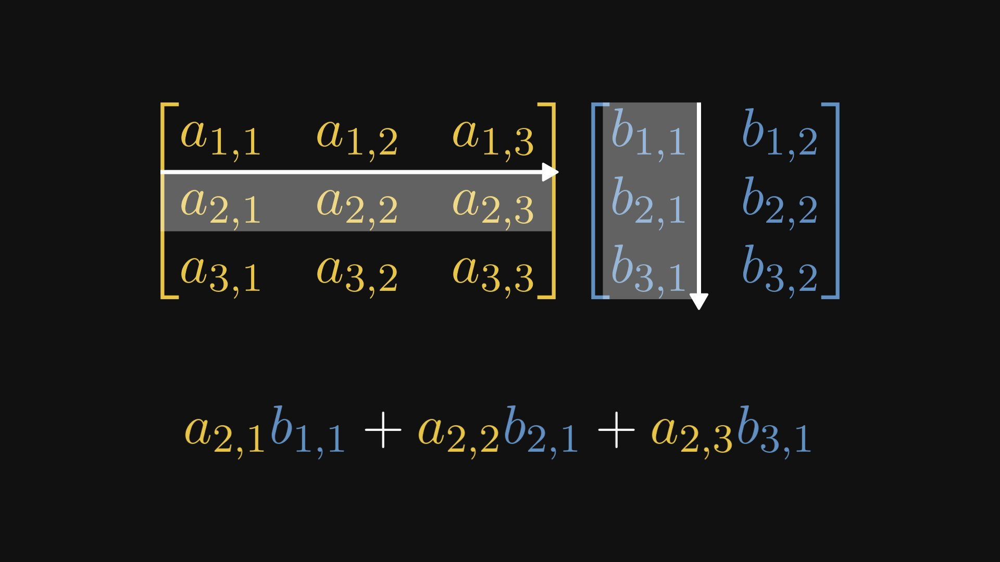
1.5. selecting a column with a standard basis vector
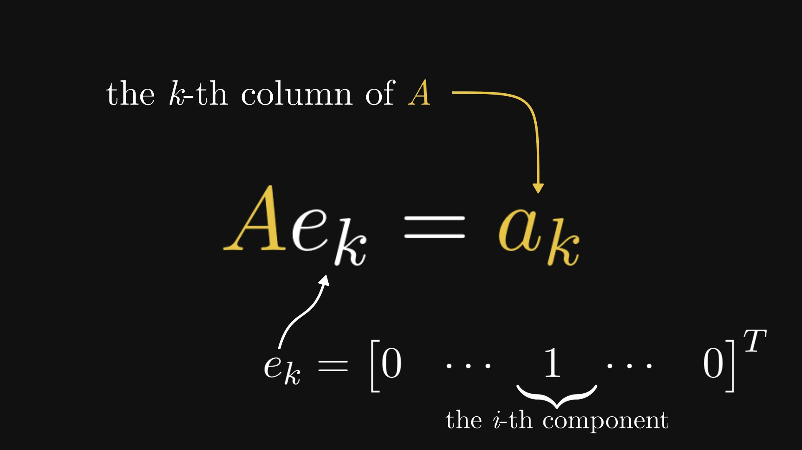
1.6. first column
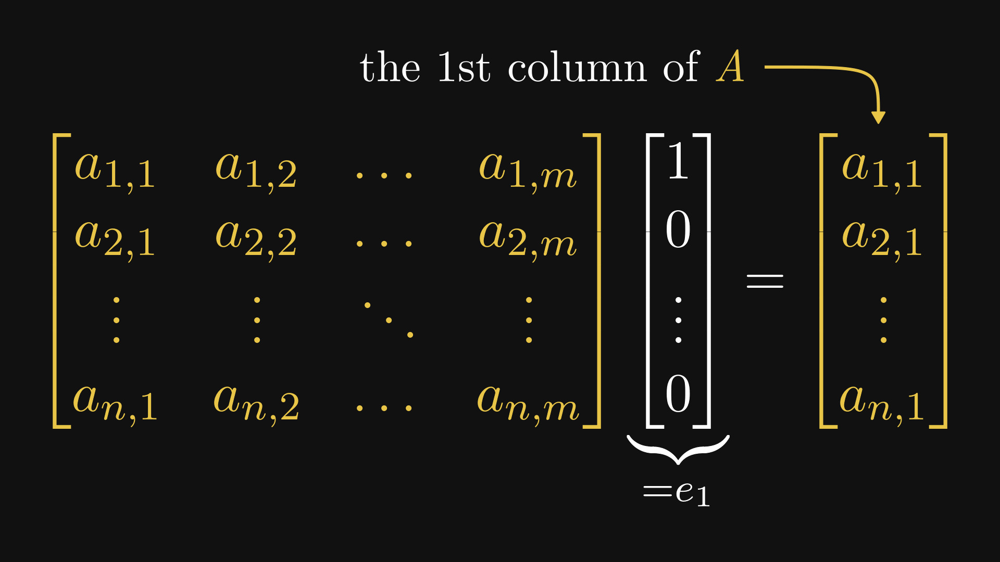
1.7. second column
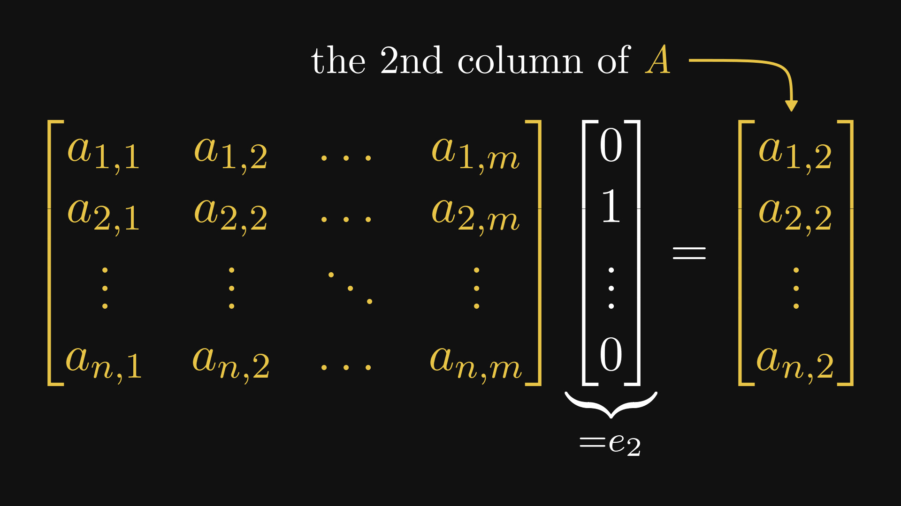
1.8. geometric interpretation

1.9. columns as basis images
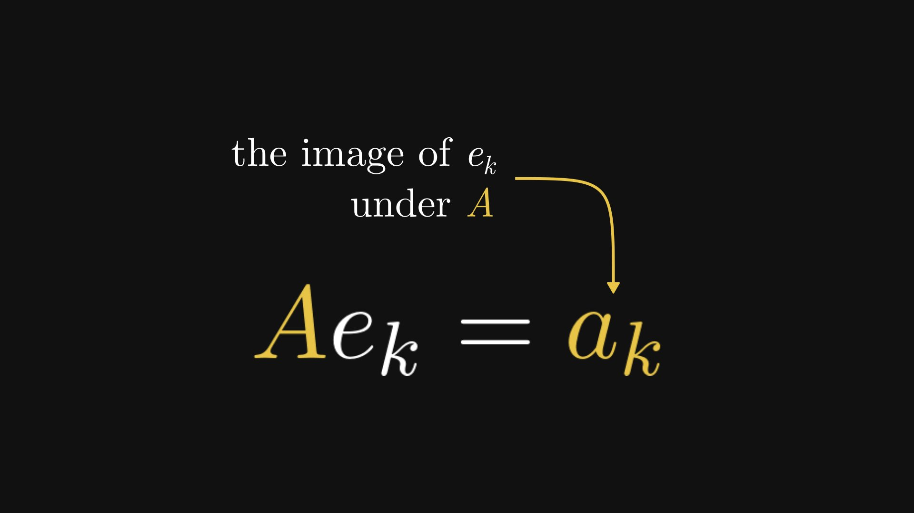
1.10. matrix vector product as a linear combination of columns
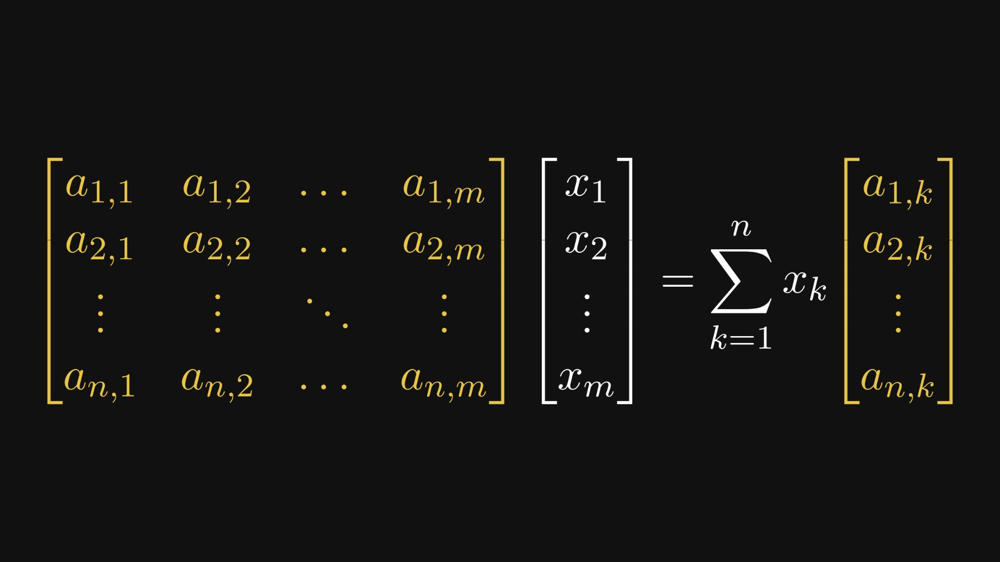
1.11. proof
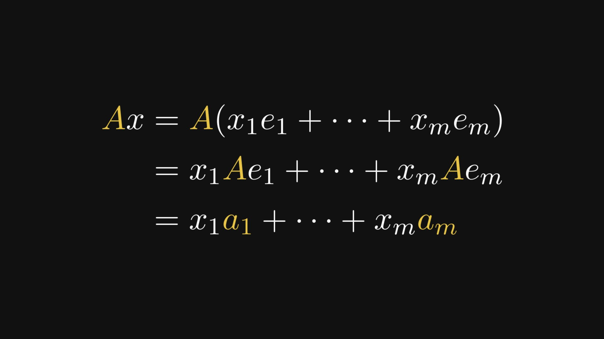
1.12. matrix product as a composition of linear maps

1.13. first column of the matrix product
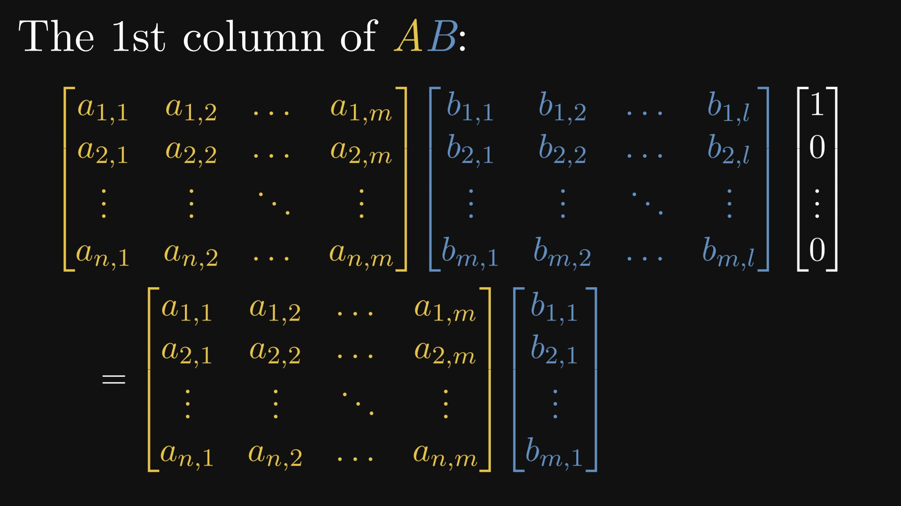
1.14. is a linear combination of all columns of one matrix with coefficients defined by the components of the first column of the other matrix
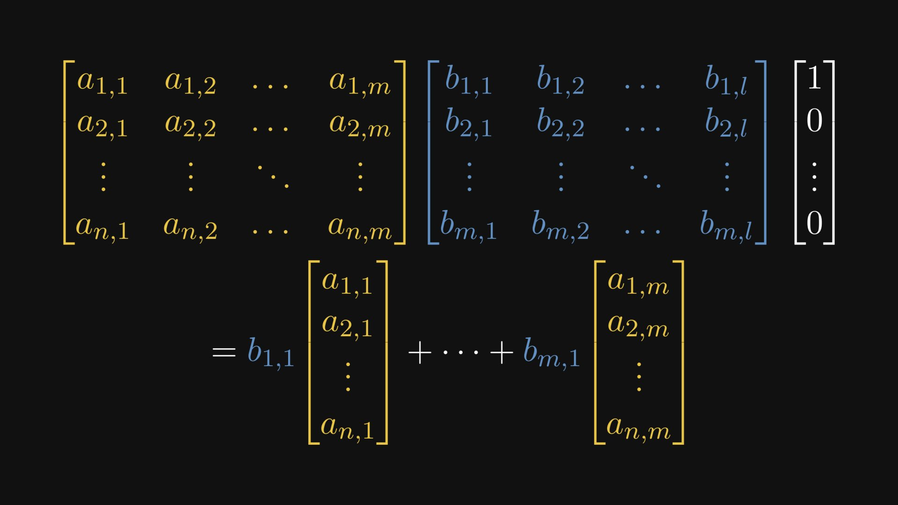
1.15. equivalently the comonents of the first column are defined by the inner product of each row of the first matrix with the first column of the second matrix
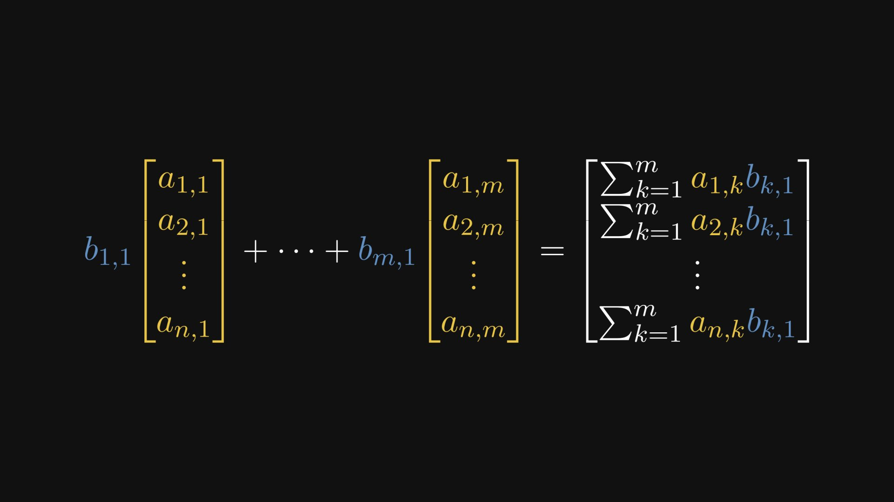
1.16. putting it all together
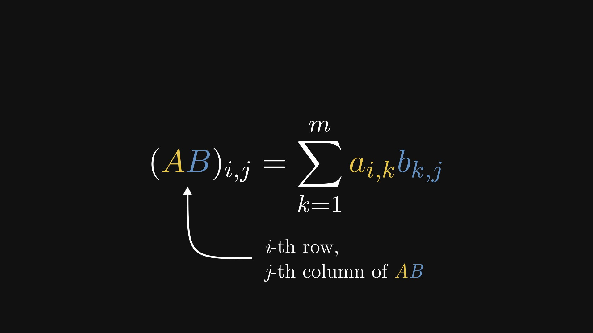
2. setup
import numpy as np
from timeit import timeit
import matplotlib.pyplot as plt
import seaborn as sns
import pandas as pd
times = {}
def timelog(version):
times[version] = timeit('matmul(a,b)', globals=globals(), number=10)
print(f'average execution time: {times[version]:.5f} seconds')
def vis():
data = {'version': times.keys(), 'time': times.values()}
df = pd.DataFrame.from_dict(data)
sns.set_theme()
sns.set_style("darkgrid", {"grid.color": ".5", "grid.linestyle": ":"})
plt.style.use("dark_background")
sns.lineplot(
data=df, x="version", y="time", color="gray", linewidth=3
).set(title='execution time (seconds on log scale) per implementation')
sns.scatterplot(
data=df, x="version", y="time", markers=True, s=200, color="lightgray", zorder=2
).set_yscale("log")
sns.despine(left=True, bottom=True)
3. define two random matrices
a = np.random.randn(50, 200)
b = np.random.randn(200, 20)
print(f'size of a is {a.size}, shape of a is {a.shape}')
print(f'size of b is {b.size}, shape of b is {b.shape}')
size of a is 10000, shape of a is (50, 200)
size of b is 4000, shape of b is (200, 20)
4. nested loops
def matmul(a, b):
ar, ac = a.shape
br, bc = b.shape
assert ac == br
c = np.zeros(shape=(ar, bc))
for i in range(ar):
for j in range(bc):
for k in range(ac):
c[i,j] += a[i,k]*b[k,j]
return c
timelog('loops')
average execution time: 0.54048 seconds
5. remove the third loop with elementwise operations
def matmul(a, b):
ar, ac = a.shape
br, bc = b.shape
assert ac == br
c = np.zeros(shape=(ar, bc))
for i in range(ar):
for j in range(bc):
c[i,j] = (a[i,:]*b[:,j]).sum()
return c
timelog('elementwise')
average execution time: 0.02733 seconds
6. remove the second loop with broadcasting
6.1. broadcasting
x = np.array(range(5))
y = np.array(range(25)).reshape((5, 5)) + 1
z = y - x
print(x)
print('-'*20)
print(y)
print('-'*20)
print(z)
print('-'*20)
# z = y - x2
x2 = np.broadcast_arrays(x, y)[0]
print(x2)
[0 1 2 3 4]
--------------------
[[ 1 2 3 4 5]
[ 6 7 8 9 10]
[11 12 13 14 15]
[16 17 18 19 20]
[21 22 23 24 25]]
--------------------
[[ 1 1 1 1 1]
[ 6 6 6 6 6]
[11 11 11 11 11]
[16 16 16 16 16]
[21 21 21 21 21]]
--------------------
[[0 1 2 3 4]
[0 1 2 3 4]
[0 1 2 3 4]
[0 1 2 3 4]
[0 1 2 3 4]]
6.2. expanding, squeezing, and selecting dimensions
x3 = np.expand_dims(x, axis=0)
# same as x3 = x[None,:]
x4 = np.expand_dims(x, axis=1)
# same as x4 = x[:,None]
x5 = np.squeeze(x3)
y2 = y[2,:]
print(f'x3 =\n{x3}')
print('-'*20)
print(f'x4 =\n{x4}')
print('-'*20)
print(f'shape of x3 is {x3.shape}')
print(f'shape of x4 is {x4.shape}')
print('\n\n')
print(f'x5 =\n{x5}')
print('-'*20)
print(f'shape of x5 is {x5.shape}')
print('\n\n')
print(f'y =\n{y2}')
x3 =
[[0 1 2 3 4]]
--------------------
x4 =
[[0]
[1]
[2]
[3]
[4]]
--------------------
shape of x3 is (1, 5)
shape of x4 is (5, 1)
x5 =
[0 1 2 3 4]
--------------------
shape of x5 is (5,)
y =
[11 12 13 14 15]
6.3. faster matmul with broadcasting
def matmul(a, b):
ar, ac = a.shape
br, bc = b.shape
assert ac == br
c = np.zeros(shape=(ar, bc))
for i in range(ar):
c[i] = (a[i,:,None] * b).sum(axis=0)
return c
timelog('broadcasting')
average execution time: 0.00738 seconds
7. Einstein summation
matmul = lambda a, b: np.einsum('ik,kj->ij', a, b)
timelog('Einstein')
average execution time: 0.00223 seconds
8. BLAS
matmul = np.matmul
timelog('BLAS')
average execution time: 0.00192 seconds
9. results
vis()